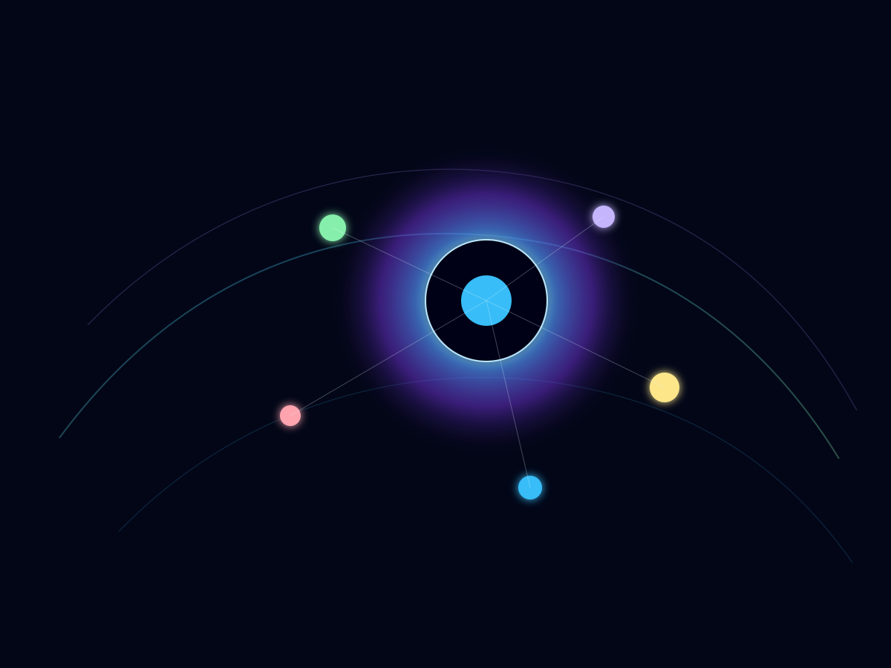
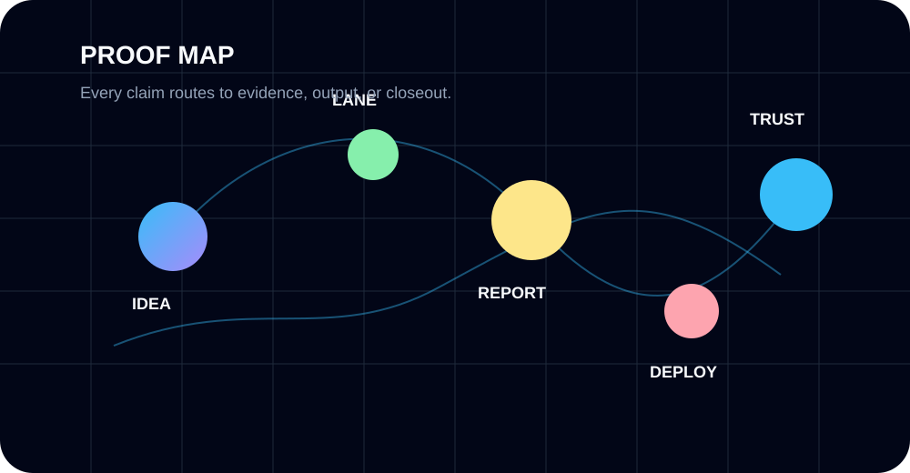

Public paper thesis JSON verified after guarded deploy and permission repair.
MaskZero
Trust-first product story and proof density standard.
P0Dream.OS Dispatch · Professional Theme Mockup
WeAreSwarm is the human + AI operating layer where websites, games, trading proof, client systems, and family-safe missions become visible, inspectable progress.
Generated Visual System
This version uses custom SVG artwork, a moving background grid, glowing orbit elements, hover motion, and proof-first content structure.

Proof Engine
Each claim needs a route to a demo, report, deploy, metric, task lane, or closeout.
Public paper thesis JSON verified after guarded deploy and permission repair.
Paper outcome ledger created with tests, summary export, and no broker writes.
Active domains classified against the Dream.OS site standard.
Safe copy-paste missions route work without secrets, billing, or destructive actions.
Each domain becomes a proof cell instead of a disconnected page.
Every lane leaves auditable proof before it becomes trusted work.
Active Cells
These are not flat cards. Each cell has a job, proof path, and next unlock.
Trust-first product story and proof density standard.
P0Paper thesis cockpit with live status and no live orders.
Live proofPaper-trade accuracy and profitability ledger.
LedgerAI website, automation, onboarding, and client systems.
RevenueExplorable world and avatar systems.
BuildKids-led tactical browser game and safe mission loop.
FamilyBattle modes, weapons, ranked arenas, and web prototype path.
ConceptPlanner, lanes, closeouts, reports, and operator workflows.
CoreProof Map
This generated map is a placeholder for the eventual live proof graph: idea → lane → report → deploy → trust.

Dispatch Log
Later this connects to real reports and commits. The tone should feel like operations, not marketing fluff.
Operator System
Dream.OS does not remove the human. It gives the human leverage, structure, memory, and a way to inspect the work.
Deploys, secrets, billing, trading, and destructive repo actions stay controlled.
Safe tasks become copy-paste lanes with no secrets, no billing, and no dangerous actions.
Every mission ends with what changed, what passed, what failed, and what comes next.
Enter the Swarm
WeAreSwarm builds proof-backed websites, automation systems, dashboards, and operating workflows that can be inspected, improved, and deployed.